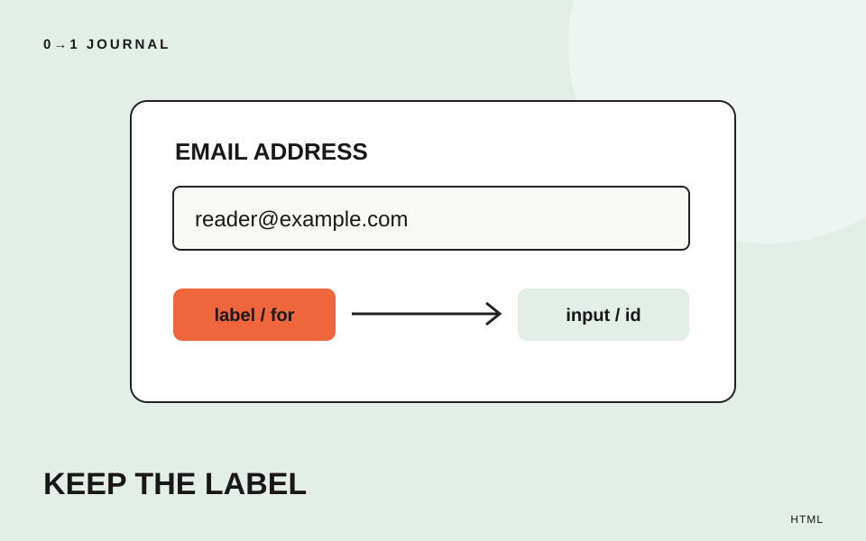

この記事の目次
メールアドレスを入力した途端、欄にあった「連絡先」という文字が消える。フォームを作り始めたときに見落としやすい状態です。今回は架空の読書会の参加案内を題材に、項目名を入力後も残し、その名前と入力欄をHTMLで結び付けます。
送信機能やエラー処理は扱いません。完成させるのは、ラベルの対応を確かめるための入力欄一つです。コードは練習用HTMLのbody内に置ける断片で、申込受付を行うフォーム一式ではありません。
入力例と項目名を分けて考える
placeholderは、欄が空のときに見える入力のヒントです。たとえば「例：reader@example.com」は入力例、「連絡先メールアドレス」は項目名。この二つは役割が異なります。
項目名までplaceholderだけに入れると、入力後に何の欄か確かめづらくなります。MDNのplaceholderの説明でも、ラベルの代用にしないことが示されています。入力例を付ける場合も、項目名は欄の外に残しましょう。
修正前の例は次の形です。このまま実際の申し込み画面に使うのではなく、何が足りないかを見つける比較用としてください。
<input type="email" placeholder="連絡先メールアドレス">
labelのforと入力欄のidを一致させる
labelは入力欄などに付ける名前を表す要素です。今回は、labelのforに書いた値と、inputのidに書いた値を一致させて関連付けます。idはページ内の要素を識別する値で、同じページで重複させません。
<p>
<label for="reading-email">連絡先メールアドレス</label><br>
<input
id="reading-email"
name="email"
type="email"
placeholder="例：reader@example.com"
>
</p>
この例の対応はreading-email同士です。nameのemailではありません。二つ目の欄をコピーして作るときは、idを変えるだけでなく、その欄のlabelのforも同じ値へ直してください。
MDNのlabelの説明で、forとidによる関連付け、およびラベルを押すと関連する入力欄へフォーカスが移る動作を確認できます。フォーカスは、現在キーボード入力を受け取る対象を指します。
「文字が見える」と「関連付いている」を両方調べる
単に入力欄の上へ文章を置いただけでも、見た目は似せられます。そこで修正後は、表示だけで終えず、次の三点を分けて確認します。
- 仮のアドレスを入力しても「連絡先メールアドレス」が欄の外に残る。
- 項目名の文字を押すと、対応する入力欄にカーソルが入る。
- HTMLを読み、forとidが一致し、そのidがページ内で重複していない。
二番が失敗したら、綴りやハイフンの違いを探します。たとえばforがreading-mail、idがreading-emailなら別の値です。入力欄だけを押して入力できることは、ラベルの対応を確認したことにはなりません。
続いてTabキーで入力欄へ移動し、現在位置が見えることも確かめます。読み上げ環境を使える場合は、欄に移ったとき項目名が伝わるか確認してください。実施できなければ、その確認は未実施として残します。
この修正だけでフォーム完成とはしない
今回のコードには送信先も受付処理もありません。ラベルを直しても、申し込みが届くかは別の確認です。実際に公開するフォームでは、フォームとリンクを最後まで確かめる記事を使い、入力エラーや受付結果の確認も行ってください。
また、長い注意文をすべてplaceholderへ詰め込むのは避け、入力中も読める場所へ置く方針を考えます。今回は項目名の対応だけを扱っているため、補足説明と入力欄の関連付けは別の実装課題として残します。
15分を目安に、一つの入力欄を見直す
練習用のページで、placeholderしかない欄を一つ選びます。項目名と入力例を分け、labelを追加し、上の三点を順に確かめましょう。使う値は自分や他人の連絡先ではなく、例示用のアドレスで十分です。
作業メモには「入力後の名前」「ラベルを押した結果」「forとidの値」を残します。HTMLを役割から選ぶ練習を続けるなら、Semantic HTMLの無料レッスンを参照できます。
記載内容へのご質問や訂正のご連絡は、hello@junkbranding.comまでお願いします。